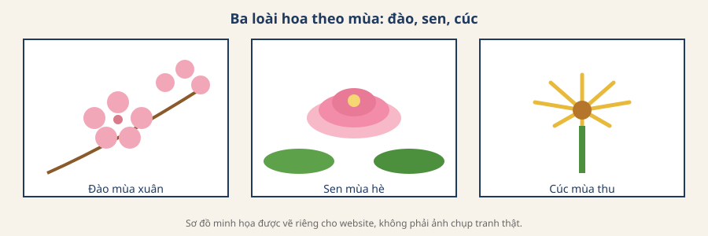

Vẽ hoa theo mùa: đào, sen, cúc — ba loài hoa, ba mùa
Tác giả: Ruler
Bạn đã vẽ tulip, hướng dương, hoa giấy, loa kèn và hoa lan trong bài "5 bức hoa lá cỡ bưu thiếp: tulip, hướng dương, hoa giấy, loa kèn, hoa lan". Bài này vẽ ba loài hoa theo mùa: hoa đào mùa xuân, hoa sen mùa hè và hoa cúc mùa thu. Ba loài hoa này dùng ba cách vẽ khác nhau: hoa đào vẽ bằng chấm tròn kéo thành cánh, hoa sen vẽ bằng cánh lớn chồng lớp, hoa cúc vẽ bằng nhiều cánh mỏng tỏa ra — mỗi loài trên một tờ giấy nhỏ, và cuối bài bạn có ba bức tranh theo mùa để treo cạnh nhau.

Sơ đồ minh họa được vẽ riêng cho website — không phải ảnh chụp tranh thật. Ba ô: cành đào với 5 cánh tròn, hoa sen với cánh lớn chồng lớp, hoa cúc với nhiều cánh mỏng tỏa ra.
Hoa theo mùa: ba loài hoa, ba cách vẽ
Bạn chọn hoa theo mùa vì mỗi mùa có một loài hoa dễ nhận ra và dễ vẽ. Hoa đào nở vào dịp Tết, đầu mùa xuân, khi trời còn se lạnh. Hoa sen nở vào mùa hè, khi trời nắng gắt và hồ nước ấm. Hoa cúc nở vào mùa thu, khi trời mát và nắng vàng nhạt. Mục đích không phải vẽ đúng thực vật học, mà luyện ba cách vẽ cánh hoa khác nhau.
Bạn dùng giấy màu nước 300 gsm, cold press, khổ nhỏ. Bạn cần cọ tròn cỡ 8 cho cánh hoa lớn, cọ tròn cỡ 4 cho cánh hoa vừa, cọ tròn cỡ 2 cho nhị hoa và chi tiết, bút chì HB và tẩy. Bạn pha màu hồng cho hoa đào, màu hồng đậm và trắng cho hoa sen, màu vàng và trắng cho hoa cúc.
Hoa 1: hoa đào mùa xuân
Hoa đào vẽ bằng cách chấm tròn rồi kéo thành cánh. Bạn làm theo 5 bước.
Bước 1: chấm 5 chấm tròn. Bạn nhúng cọ tròn cỡ 8 vào màu hồng đã pha loãng với nước, rồi chấm 5 chấm tròn xếp thành hình bông hoa. Bạn chấm 3 chấm cho nửa bông hoa ở mép cành. Bạn đừng chấm quá nhiều màu: chấm tròn phải nhạt và trong.
Bước 2: kéo chấm thành cánh. Bạn rửa cọ bằng nước sạch, rồi kéo mỗi chấm tròn thành hình cánh hoa bằng nước sạch. Bạn kéo từ ngoài vào trong, để màu hồng loang thành cánh hoa mềm. Bạn làm khi chấm tròn còn ướt, không đợi khô.
Bước 3: thêm màu đậm ở gốc cánh. Khi cánh hoa còn ướt, bạn chấm một chấm hồng đậm hơn ở gốc mỗi cánh để tạo chiều sâu. Bạn đừng chấm quá nhiều: một chấm nhỏ là đủ.
Bước 4: vẽ cành. Cành vẽ bằng nét cong hơi ngoằn ngoèo bằng đầu cọ, màu nâu trộn một chút xanh dương lạnh. Cành có thể vẽ trước hoa, hoặc đợi hoa khô rồi mới vẽ, tùy bạn. Hoa vẽ thành cụm 3 bông dọc theo cành, không vẽ từng bông riêng lẻ.
Bước 5: thêm nhị hoa và lá. Nhị hoa vẽ bằng nét mảnh màu hồng đậm ở giữa bông hoa. Bạn thêm một chút màu xanh lá ở gốc hoa. Lá chỉ cần 2–3 nét đơn giản, không vẽ từng chiếc lá chi tiết.
Marco Flavio viết trên Out There Watercolors rằng bạn vẽ hoa đào bằng cách bắt đầu từ hình lớn trước: khối hoa, mặt đất, thân cây và hình lớn khác, rồi mới thêm chi tiết nhỏ — vẽ thành cụm hoa, không vẽ từng bông riêng lẻ; hoa ở xa thì tô vào giấy hơi ẩm. Bạn chừa một số vùng sáng không tô để giữ cảm giác thoáng đãng. Bạn dùng màu hồng với nhiều nước cho hoa, thêm một chút màu đậm hơn khi lớp wash bắt đầu khô cho điểm nhấn sâu hơn, và trộn màu đất với một chút xanh dương lạnh cho cành và thân cây. Bạn đừng đuổi theo màu chính xác: bạn vẽ theo mùa, ánh sáng và không khí.
Hoa 2: hoa sen mùa hè
Hoa sen vẽ bằng cánh lớn chồng lớp. Hoa sen có cánh lớn, tròn và xếp chồng lên nhau thành nhiều lớp. Hoa sen vẽ trong 5 bước.
Bước 1: vẽ cánh ngoài. Lớp ngoài có 5 cánh lớn, vẽ bằng nét ấn bụng cọ rồi nhấc lên, gọi là press-and-lift, giống như cánh hoa trong bài "5 bức hoa lá cỡ bưu thiếp: tulip, hướng dương, hoa giấy, loa kèn, hoa lan". Bạn tô cánh ngoài bằng màu hồng nhạt, chừa khoảng trắng nhỏ ở giữa mỗi cánh làm điểm sáng.
Bước 2: vẽ cánh giữa. Khi cánh ngoài còn hơi ẩm, bạn vẽ 5 cánh nhỏ hơn ở lớp giữa, màu hồng đậm hơn một chút, đặt so le với cánh ngoài. Bạn đừng vẽ cánh giữa đè lên hoàn toàn cánh ngoài: bạn chừa một phần cánh ngoài lộ ra.
Bước 3: vẽ cánh trong và nhị. Lớp trong có 3 cánh nhỏ nhất, màu hồng đậm nhất, rồi nhị hoa là chấm vàng ở giữa — chấm bằng cọ cỡ 2 vào tâm khi cánh còn hơi ẩm, giống như chấm vàng vào tâm hoa tròn trong bài hoa lá.
Bước 4: vẽ lá sen. Lá sen là một hình tròn lớn màu xanh lá, với một đường cắt từ mép vào tâm, và vẽ sau hoa vì màu xanh loang nhanh trên giấy ướt. Bạn tô lá sen bằng màu xanh sap trộn một chút màu hoa để hòa hợp màu sắc, giống như bài hoa lá đã dạy: trộn một chút màu hoa vào màu lá để hòa hợp màu sắc.
Bước 5: vẽ mặt nước. Mặt nước dưới hoa sen là một lớp wash xanh dương nhạt, ướt trên ướt, với vài nét gợn sóng ngang. Bạn dùng kỹ thuật trong bài "Vẽ nước: sông, biển, mưa — mặt nước phẳng, gợn sóng và phản chiếu": gợn sóng luôn nằm ngang, bóng của hoa sen nằm ngay dưới hoa, tối hơn và lạnh hơn hoa một chút.
Hoa sen vẽ lớn hơn hoa đào, vì cánh sen lớn và cần nhiều chỗ — một bông sen trên một tờ giấy nhỏ, không vẽ nhiều bông trên cùng một tờ, vì sen cần không gian để cánh xòe ra.
Hoa 3: hoa cúc mùa thu
Hoa cúc vẽ bằng nhiều cánh mỏng tỏa ra. Hoa cúc có nhiều cánh mỏng, dài và xếp thành nhiều lớp. Hoa cúc vẽ trong 5 bước, dùng lại cách vẽ cánh dài tỏa ra trong bài "5 bức hoa lá cỡ bưu thiếp: tulip, hướng dương, hoa giấy, loa kèn, hoa lan" (bức hoa hướng dương).
Bước 1: vẽ tâm hoa. Tâm hoa vẽ trước bằng màu vàng đất hoặc vàng cadmium, chấm nâu đất tạo bóng. Tâm hoa cúc lớn hơn tâm hoa đào, vì hoa cúc có nhiều cánh che xung quanh.
Bước 2: vẽ cánh bằng một nét. Mỗi cánh là một nét hình giọt nước tỏa ra từ tâm — ấn cọ ở gốc cánh, nhấc lên khi kéo ra ngoài — mỏng và dài hơn cánh hoa đào, và nhiều cánh hơn: khoảng 15–20 cánh cho một bông cúc, so với 5 cánh cho một bông đào.
Bước 3: vẽ cánh lớp thứ hai. Khi cánh lớp đầu còn hơi ẩm, bạn vẽ thêm một lớp cánh ngắn hơn ở phía trong, màu vàng đậm hơn hoặc màu trắng với bóng xám nhạt. Cánh lớp hai vẽ so le với cánh lớp đầu để hoa trông đầy đặn.
Bước 4: vẽ cụm 3–5 bông. Cụm 3–5 bông vẽ ở các góc khác nhau — một bông nghiêng trái, một bông nghiêng phải, một bông nhìn thẳng — giống như bài hoa lá đã dạy: vẽ cụm hoa dễ hơn và sinh động hơn vẽ một bông riêng lẻ.
Bước 5: vẽ lá và thân. Lá cúc vẽ bằng nét dài, mảnh, màu xanh sap; thân cúc là một nét thẳng màu xanh đậm. Bạn đừng vẽ lá cúc quá to, vì lá cúc nhỏ và mảnh hơn lá sen nhiều.
Hoa cúc mùa thu vẽ màu vàng, vì vàng là màu của nắng thu. Bạn cũng có thể vẽ hoa cúc trắng bằng cách tô nền xung quanh và chừa cánh là giấy trắng, bạn tô nền màu xanh lá hoặc màu nâu nhạt xung quanh bông hoa, và chừa cánh hoa là giấy trắng.
Ba loài hoa, ba bảng màu
Bạn dùng ba bảng màu khác nhau cho ba loài hoa, mỗi bảng chỉ 3 màu.
Hoa đào: màu hồng nhạt cho cánh, màu hồng đậm cho gốc cánh, màu nâu trộn xanh dương lạnh cho cành. Bạn pha màu hồng bằng cách trộn đỏ alizarin với nhiều nước, không dùng màu hồng tuýp đậm.
Hoa sen: màu hồng nhạt cho cánh ngoài, màu hồng đậm cho cánh trong, màu vàng cho nhị, màu xanh sap cho lá. Bạn pha màu hồng sen bằng cách trộn đỏ alizarin với một chút xanh ultramarine để có màu hồng tím nhạt.
Hoa cúc: màu vàng đất cho tâm, màu vàng cadmium cho cánh, màu xanh sap cho lá. Bạn pha màu vàng cúc bằng cách trộn vàng cadmium với một chút vàng đất để có màu vàng ấm.
Bạn đừng dùng màu đen cho bóng của hoa, giống như bài hoa lá đã dạy: bạn trộn màu tối từ đỏ alizarin và xanh ultramarine thay vì dùng màu đen tuýp. Bóng của hoa chấm màu tối vào gốc cánh khi cánh còn ướt, để màu tự loang lên trên.
Lỗi thường gặp
Hoa đào trông như chấm tròn, không giống cánh hoa. Bạn kéo chấm tròn thành cánh bằng nước sạch khi chấm còn ướt, không để chấm khô rồi mới kéo.
Hoa sen trông phẳng, không có lớp. Cánh lớp giữa vẽ so le với cánh lớp ngoài, và chừa một phần cánh ngoài lộ ra. Bạn tô cánh trong đậm hơn cánh ngoài.
Hoa cúc trông như hoa hướng dương. Cánh cúc mỏng và dài hơn cánh hoa hướng dương, vẽ nhiều cánh hơn, và tâm cúc nhỏ hơn tâm hoa hướng dương.
Ba bông hoa trông giống nhau. Mỗi loài hoa vẽ bằng một cách khác nhau: đào bằng chấm kéo, sen bằng cánh chồng lớp, cúc bằng nhiều cánh tỏa ra. Bạn đừng dùng cùng một cách vẽ cho cả ba loài hoa.
Hoa theo mùa vẽ để luyện ba cách vẽ cánh hoa khác nhau, không phải để vẽ đúng thực vật học. Vẽ xong ba bức thì đặt cạnh nhau và xem bức nào bạn thích nhất, bức nào khó vẽ nhất — bạn sẽ thấy mình vẽ cánh hoa tốt hơn sau ba bức này.
Bài tập: ba bức tranh theo mùa
Ba bức tranh theo mùa vẽ trong một buổi, mỗi bức trên một tờ giấy nhỏ: hoa đào mùa xuân, hoa sen mùa hè, hoa cúc mùa thu. Bạn dùng cùng một bộ đồ và cùng một bảng màu 6 màu gốc cho cả ba bức. Hoa đào vẽ bằng chấm kéo, hoa sen bằng cánh chồng lớp, hoa cúc bằng nhiều cánh tỏa ra. Bạn đặt ba bức cạnh nhau theo thứ tự xuân, hạ, thu, và dán vào sổ vẽ. Bạn sẽ có một bộ ba bức tranh theo mùa để treo lên tường hoặc tặng bạn bè.
Kết luận
Hoa đào vẽ bằng chấm tròn kéo thành cánh, hoa sen vẽ bằng cánh lớn chồng lớp, hoa cúc vẽ bằng nhiều cánh mỏng tỏa ra. Ba loài hoa dùng ba bảng màu khác nhau, nhưng cùng một nguyên tắc: bạn vẽ cánh hoa bằng một nét, chừa khoảng trắng làm điểm sáng, và trộn một chút màu hoa vào màu lá để hòa hợp màu sắc. Bạn đừng dùng màu đen cho bóng hoa, mà trộn màu tối từ đỏ alizarin và xanh ultramarine.
Bài tiếp theo, bài "Chăm sóc cọ và bảo quản màu: rửa cọ, giữ dáng cọ và cất hộp màu", dạy bạn giữ gìn bộ đồ đã dùng trong 18 bài vừa qua: rửa cọ đúng cách, giữ dáng cọ không bị xòe, và cất hộp màu khô ráo.
Nguồn tham khảo
- Marco Flavio, Out There Watercolors, "Paint Cherry Blossoms | Spring 2026 Kit" — quyết định cảm xúc trước khi vẽ; bắt đầu từ hình lớn (khối hoa, mặt đất, thân cây), vẽ cụm hoa không vẽ từng bông, vẽ hoa xa vào giấy hơi ẩm, chừa vùng sáng; màu hồng với nhiều nước cho hoa, thêm màu đậm khi wash bắt đầu khô, cành trộn màu đất với xanh dương lạnh, lá xanh pha màu đất, xa dùng xanh dương lạnh với nhiều nước; hoa anh đào gắn với hanami, ngắm hoa, mùa hoa ngắn ngủi: https://www.outtherewatercolors.com/paint-cherry-blossoms-spring-2026-kit
- ArtsyDee, "Easy Watercolor Flowers Step by Step" — hoa cúc vẽ tâm trước rồi cánh bằng một nét hình giọt nước, vẽ cụm 3–5 bông ở các góc khác nhau; hoa dại vẽ nhanh không sửa; trộn một chút màu hoa vào màu lá; không dùng màu đen cho bóng, trộn màu tối từ đỏ alizarin và xanh ultramarine; bảng 6 màu hoa: https://www.artsydee.com/easy-watercolor-flowers-tutorial/
- Margaret Whitfield, Breathly, "How to Paint Simple Watercolor Flowers for Beginners" — hoa tròn vẽ vòng 5–6 cánh quanh tâm, chấm vàng vào tâm khi cánh còn hơi ẩm, vẽ thân và hai lá bằng một nét thẳng; hoa cúc trắng vẽ bằng cách tô nền xung quanh và chừa cánh là giấy trắng; một bông hoa mất khoảng 10–15 phút: https://mybreathly.com/blogs/creative-calm/how-to-paint-simple-flowers-in-watercolor